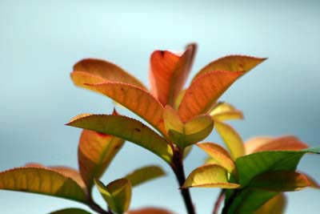

一个可爱的小家伙乘着风儿顽皮地落在了我的肩上，我 低头看了看，原来是一片枫叶。  我小心翼翼地把它捧在手中，一阵风儿吹过，叶子的几个小尖脚随风摆起，多像婴儿的小手掌啊！平滑的叶面，清晰的脉络，十分柔软细嫩。枫叶树种在秋冬的时候，体内会产生一些化学反应，让原本树叶中所含 枫叶(10张)的物质或部份组织分解之后，回收储藏在茎或根的部位，来年春天的时候可以再利用，叶绿体、叶绿素就是被分解回收的对象之一，因为叶绿素的含量较大而遮盖了其它颜色，使叶片呈绿色。因此当叶子里的叶绿素没有了的时候，其它色素的颜色彰显出来，如花青素的红色、胡萝卜素的黄色和叶黄素的黄色等。除此之外，枫叶中贮存的糖分还会分解转变成花青素，使叶片的颜色更加艳丽、火红。 枫叶没有五个"手指"就不是枫叶,而且，枫叶的“五指”上具有锯齿，这是枫叶的特色!